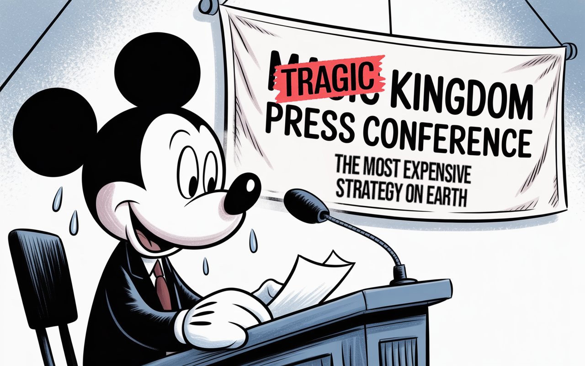

The Magic Kingdom Crumbles in Corporate Cowardice
Disney silenced Kimmel, sparking a mass exodus that crashed their systems—and credibility. This misfire exposed corporate America's costliest strategy: cowardice as prudence. Mickey's white gloves? Perfect for waving the surrender flag. Welcome to the new Magic Kingdom: where dreams die.


According to Bob Chapek (former Disney CEO) himself,
"We're going to take a step back and see how this all unfolds."

In an era where customers can vote with their wallets instantly, Disney's recent misstep provides a compelling case study in the dangers of corporate fence-sitting. This essay examines how Disney's attempt to avoid controversy by suspending Jimmy Kimmel Live! backfired spectacularly, revealing deeper issues in their decision-making process and brand strategy.
We'll explore how this incident exposes a broader epidemic of institutional cowardice in corporate America, where companies optimize for avoiding friction rather than standing for meaningful principles. Through this analysis, we'll uncover why neutrality in the attention economy isn't just impossible—it's brand suicide.
As we dissect Disney's strategic error, we'll consider its implications for customer trust, creator relationships, competitive positioning, and long-term brand value. Ultimately, this piece aims to demonstrate why corporate courage is not just a moral imperative but an economic necessity in today's business landscape.

The Most Expensive Strategy on Earth
Mickey Mouse once stood for imagination. Now he just stands for whatever offends the fewest people.
When Disney suspended Jimmy Kimmel Live! following affiliate pressure over the host's commentary, the resulting subscriber exodus didn’t just crash the company's cancellation systems—it crashed their credibility. This wasn't just a PR crisis—it was a real-time demonstration that institutional cowardice has become the most expensive business strategy in corporate America.
The facts alone are damning: Disney canceled their most prominent late-night show to appease affiliate partners, replacing it with reruns and triggering a subscriber revolt that broke their technical infrastructure. But this incident exposes something deeper—the complete collapse of strategic thinking in modern corporate governance.
The Great Stakeholder Miscalculation

Disney made a fundamental strategic error: they optimized for declining affiliate partnerships while alienating millions of direct subscribers who represent their actual future. Think about this for a moment: they let affiliate partnerships—essentially dying distribution models—dictate content decisions that would affect millions of direct subscribers. It's backwards.
This is strategic suicide dressed up as smart business. In the subscription economy, customer lifetime value compounds over decades, while affiliate relationships represent diminishing revenue streams tied to dying distribution models. Disney chose temporary controversy avoidance over permanent customer relationships, essentially trading their growth engine for regulatory theater.
The technical infrastructure failures make this whole mess even worse. Disney's cancellation systems weren't architected to handle mass exodus events because they never conceived of alienating their customer base at scale. This reveals how completely insulated their decision-making process has become from actual market feedback loops.
The Authenticity Architecture Collapse
Disney's decision to suspend Kimmel didn't just affect their immediate bottom line—it struck at the very core of their brand identity. Disney built their brand around creativity, imagination, and standing up to authority. Their corporate behavior now directly contradicts these values. This isn't mere hypocrisy; it's brand architecture collapse. When core brand narratives become completely disconnected from operational reality, customers experience cognitive dissonance that resolves by rejecting the brand entirely.
The Mickey Mouse corporate persona worked because Disney at least attempted to align actions with stated values. Now they've revealed their actual priorities: affiliate appeasement and controversy avoidance. Mickey's white gloves, it turns out, were perfect for surrender all along.
This collapse of authenticity sets the stage for a series of cascading consequences, affecting everything from customer loyalty to creative partnerships.
The Irreversibility Problem
Here's what Disney's executives fundamentally misunderstand: digital cancellation creates permanent behavioral change. When customers cancel subscription services over principles rather than price, they rarely return. The effort required to navigate cancellation creates psychological commitment to that decision—what behavioral economists call "commitment escalation." These customers haven't taken temporary breaks; they've repositioned Disney as fundamentally opposed to their values.
Every screenshot of a canceled subscription becomes user-generated content that algorithmically promotes further cancellations. Disney has achieved the impossible—they've turned their customers into unpaid marketing directors for a campaign against themselves. It's corporate seppuku by algorithm.
The Ripple Effects
This irreversibility problem extends beyond just customer relationships, affecting Disney's standing in the broader entertainment ecosystem.
The Creator Economy Exodus
The implications for Disney's creative ecosystem are catastrophic and irreversible. Every content creator now knows Disney will abandon them when their work generates controversy. This creates immediate chilling effects where creators will either self-censor or migrate to platforms offering actual creative protection.
But here's the real kicker: they depend on top-tier creative talent to produce differentiated content. By demonstrating they'll sacrifice creators to political pressure, they've signaled to the entire entertainment industry that Disney partnerships carry inherent career risk. Why would any A-list talent choose Disney when Netflix, Apple, or Amazon offer superior creative protection?

This represents a fundamental competitive disadvantage in the attention economy, where content quality determines platform success. Disney has essentially published a recruitment disadvantage that will compound over time as creative talent gravitates toward platforms that won't abandon them during controversies.
The Competitive Gift
Disney has handed their streaming competitors an enormous strategic advantage. Netflix, Amazon Prime, and Apple TV+ can now position themselves as platforms protecting creative expression while Disney becomes the platform that capitulates to political pressure. This differentiation is especially powerful because it's based on demonstrated behavior rather than marketing messaging.
The subscription economy rewards platforms offering creators and audiences something unique. Disney just made "we won't abandon our content creators" a viable competitive positioning for every other streaming service. Talk about shooting yourself in the foot while handing your competitors the gun.
The Regulatory Capture Paradox
Here’s the twisted part, Disney's attempt to avoid pressure will invite more of it. By demonstrating they can be pressured into content decisions, they've made themselves a more attractive target for future pressure campaigns.
Every political actor now knows sufficient pressure can force Disney to cancel content. They've published a playbook for content manipulation that will be used against them repeatedly. Instead of creating regulatory goodwill, they've established precedent for regulatory exploitation.
The Systemic Issues Exposed
While the immediate consequences of Disney's decision are alarming, they merely scratch the surface of deeper, systemic problems within the company's decision-making apparatus and corporate culture.
The Measurement Framework Failure
Disney's decision-making process clearly lacks proper frameworks for measuring different risk types. They treated affiliate pressure—representing declining revenue streams—as equivalent to subscriber dissatisfaction—representing their growth future. This suggests systemic analytical failures extending far beyond this incident.
A functioning corporate measurement system would have immediately identified that alienating millions of direct subscribers to appease affiliate partners was economically insane. It's like amputating your leg to cure a hangnail. This suggests their analytics are fundamentally broken, and this won't be the last disaster we see from them.
The Cultural Momentum Reversal
Disney has reversed their cultural momentum at the worst possible moment. They were successfully transitioning from traditional media to technology-enabled experiences—a shift requiring trust with digital-native audiences who value authenticity over corporate safety.
By reverting to legacy media decision-making—appease affiliates, avoid controversy, prioritize institutional relationships over customer relationships—they've signaled they're fundamentally still a legacy media company wearing streaming clothing. In the attention economy, that's a death sentence.
The Trust Asymmetry Collapse
Trust operates asymmetrically: years to build, seconds to destroy. Disney spent decades building brand trust around creative courage and values-based decision-making. They destroyed that trust in a single decision revealing their actual priorities. It's the corporate equivalent of watching someone's lifetime fitness regimen undone by a single all-you-can-eat buffet binge—except this buffet served nothing but crow. Once customers see who you really are, it's almost impossible to convince them otherwise.
The Institutional Cowardice Epidemic
What we're witnessing extends beyond Disney to represent a broader epidemic of institutional cowardice infecting American corporate governance. Companies are optimizing for avoiding any friction rather than standing for meaningful principles, not realizing that trying to please everyone while standing for nothing is the fastest route to irrelevance.

Disney chose what they believed would generate the least resistance, failing to understand that in the attention economy, neutrality isn't just impossible—it's brand suicide. They've managed to appear both tyrannical to free speech advocates and spineless to anyone valuing institutional courage.
The Path Forward
Disney now faces an impossible choice: reinstating Kimmel appears weak while maintaining their stance accelerates subscriber losses. This dilemma exposes the fundamental flaw in corporate fence-sitting—it satisfies no one while alienating everyone.
The path forward requires acknowledging a harsh reality: in today's business landscape, there's no such thing as a "safe" decision when it comes to values and authenticity. Companies must recognize that trying to please everyone while standing for nothing is the fastest route to irrelevance.
Disney's misstep demonstrates that institutional courage isn't just morally necessary—it's economically essential. In an era where customers can instantly vote with their wallets and brand authenticity is currency, corporate cowardice has become America's most expensive strategy.
The broader implications extend far beyond Disney. Corporate America must learn that in the attention economy, neutrality is impossible and often counterproductive. Companies need to clearly define their values, stand by them consistently, and be prepared to weather short-term controversies for long-term brand integrity.
Ultimately, Disney's subscriber exodus represents more than a business failure—it's a clarion call. The age of fence-sitting is over. Companies that fail to stand for something meaningful will find themselves standing for nothing at all. This incident will likely become one of the most expensive business school case studies of all time, and its lessons are ones no modern corporation can afford to ignore.
Don't miss the weekly roundup of articles and videos from the week in the form of these Pearls of Wisdom. Click to listen in and learn about tomorrow, today.

Sign up now to read the post and get access to the full library of posts for subscribers only.

Khayyam Wakil is a cybernetician who studies how artificial intelligence reshapes human agency—when he's not being outsmarted by his own smart home. His upcoming book "Knowware: Systems of Intelligence" explores the cognitive sovereignty we're trading for convenience. He currently advises Fortune 500 companies on navigating technological transitions, which is ironic since he still can't figure out why his smart fridge keeps ordering pickles.